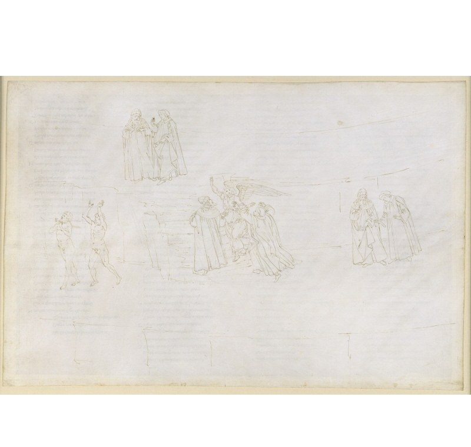

Песнь 17 из 33
Гнев → Уныние. Любовь — двигатель всего

Кратко
Выйдя из дыма к закату, Данте видит экстатические образы пагубного гнева (Прокна, Аман, Амата). Ангел кротости стирает третье «P». Поскольку с темнотой подъём невозможен, поэты делают привал, и Вергилий излагает устройство всей горы: всё в мире движимо любовью; грех — это любовь, направленная не туда. Три нижних круга (гордыня, зависть, гнев) — любовь к злу ближнего; средний (уныние) — недостаточная любовь к истинному благу; три верхних — чрезмерная любовь к благам земным.
Главные моменты
- Образы наказанного гнева; стёрто третье «P».
- Срединная (буквально центральная) песнь — изложение нравственного плана горы.
- Любовь объявлена движущей силой всех поступков, добрых и злых.
- Классификация семи грехов как извращённой, скудной или чрезмерной любви.
Значение
Композиционный и смысловой центр кантики: теория любви как корня всякого действия.